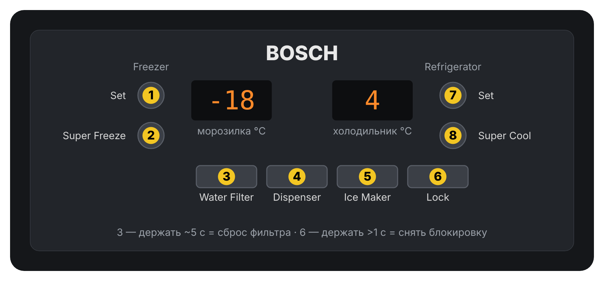
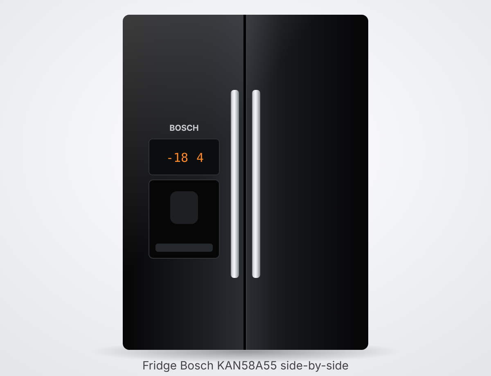
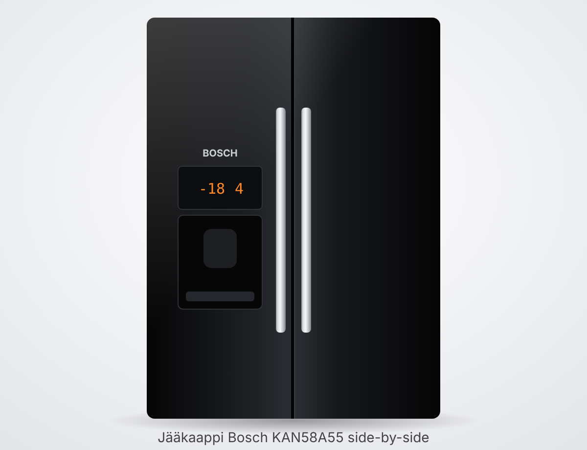

• Bosch KAN58A55 — американский холодильник side-by-side Serie 6: слева морозильная камера, справа холодильная, чёрное стекло на дверях, диспенсер воды и льда в двери морозилки, автоматический ледогенератор, подключение к водопроводу. • Модель определена по внешнему виду (чёрное стекло, диспенсер, набор кнопок Set / Super Freeze / Water Filter Reset / Dispenser / Ice Maker / Lock / Super Cool / Set); заводская табличка (шильдик) не найдена — модель стоит подтвердить по табличке. • Та же серия и та же инструкция: KAN58A40, KAN58A45, KAN58A50 (отличаются цветом/отделкой). Инструкция общая для нескольких моделей, поэтому часть описанных деталей (бар-отсек, зона свежести, винная полка) у этого холодильника может отсутствовать. • Где табличка: по инструкции — внутри прибора (там же указано количество хладагента), точное место не уточнено. У холодильников Bosch её обычно ищут на боковой стенке холодильной камеры внизу, у ящиков для овощей. • На табличке: E-Nr (номер изделия, например KAN58A55/xx) и FD (номер производства) — их спрашивает сервис.
• Панель с дисплеем находится на двери морозилки над диспенсером. Слева — кнопки морозильной камеры, справа — холодильной. • Set (морозильник): выбор температуры морозилки. Нажимайте повторно — значение меняется по шагам от самого тёплого (Min) к самому холодному (Max), затем по кругу. Шкала из 5 светодиодов показывает весь диапазон. Последнее показанное значение запоминается автоматически. • Диапазон морозилки: от −16 °C до −22 °C (в английском тексте минус у −16 пропущен — опечатка). Заводская установка — середина шкалы. • Set (холодильник): то же самое для холодильной камеры, диапазон +2…+8 °C. • Super Freeze (суперзаморозка): включает максимальное охлаждение морозилки. Нужна перед закладкой большой партии свежих продуктов — включите заранее, до 24 часов, в зависимости от количества. Повторное нажатие выключает; во время работы на дисплее горит символ. • Super Freeze — когда выключается сам: в инструкции не указано (по обзору zoom.cnews выключается автоматически, время не названо). • Super Cool (суперохлаждение): максимально охлаждает холодильную камеру — для быстрого охлаждения продуктов и напитков. Включение/выключение той же кнопкой, во время работы на дисплее горит символ. • Super Cool — когда выключается сам: в инструкции не указано. По обзору zoom.cnews — опускает температуру до +2 °C и отключается сам примерно через 6 часов. • Dispenser (выбор продукта): нажимайте, пока не загорится нужный символ — «вода», «кубики льда» или «колотый лёд». Выдача — прижатием стакана к лапке (пластине) диспенсера. • Ice Maker (блокировка ледогенератора): нажатие — ледогенератор выключен, горит символ «ледогенератор заблокирован». Повторное нажатие (символ гаснет) — снова включён. Выключать для чистки, а также если лёд не будет нужен больше недели (отпуск). • Lock (блокировка панели, «защита от детей»): не даёт случайно изменить настройки. Включается нажатием кнопки — на дисплее загорается символ замка. Снять блокировку: удерживать Lock дольше 1 секунды. Сколько держать для включения — в инструкции не указано. • Water Filter / Reset: после замены фильтра удерживать около 5 секунд — гаснет индикатор «требуется замена фильтра». • Энергосбережение: через минуту после закрытия дверей и последнего нажатия кнопки дисплей притухает; при открытии двери или нажатии кнопки яркость возвращается.
• Холодильная камера: +4 °C (диапазон +2…+8 °C). • Морозильная камера: −18 °C (диапазон −16…−22 °C). • После первого включения заводские температуры устанавливаются примерно за 2–3 часа — продукты закладывать только после этого. • Перед включением после установки/перевозки подождать не менее 1 часа (масло в компрессоре должно стечь). • Сроки хранения в морозилке: рыба, колбаса, готовые блюда, выпечка — до 6 мес.; сыр, птица, мясо — до 8 мес.; овощи и фрукты — до 12 мес. • Мощность замораживания — до 10 кг за 24 часа; не превышать. • Не хранить в холодильнике плоды, чувствительные к холоду: бананы, ананасы, авокадо, папайю, баклажаны, огурцы, зелёные помидоры, картофель.
• Диспенсер работает только при включённом в сеть холодильнике. • Первое использование: если в линиях остался воздух — наливать и выливать воду, пока не пойдёт ровно без пузырей; первые 5 стаканов вылить. Первые 30–40 кубиков льда выбросить (гигиена). • После установки нового фильтра: промыть фильтр, сливая воду около 5 минут; лёд, сделанный в первые 24 часа, выбросить. • Первый лёд появляется примерно через 24 часа после включения. Производительность — около 100 кубиков в сутки. Когда контейнер полон, ледогенератор сам останавливается. • Вода: выбрать символ «вода», прижать стакан к пластине; при отводе стакана подача прекращается. Вода охлаждённая; для более холодной — сначала положить лёд. • Лёд: выбрать «кубики» или «колотый лёд», прижать ёмкость; убирать, когда наполнена примерно наполовину (иначе лёд в жёлобе может переполнить или забить выход). После переключения с кубиков на колотый первые порции могут содержать целые кубики. • Не использовать хрупкие стаканы; не совать пальцы в выход — внутри ножи дробилки. • Если лёд слипся/давно не брали: кубики усыхают, теряют вкус и смерзаются. Вынуть контейнер, высыпать, промыть тёплой водой, тщательно вытереть контейнер и шнек. Вставить до фиксации (если не входит — провернуть шнек). Лёд, сделанный в следующие 24 часа, тоже выбросить. • Если кубики застряли в выходе или дробилке: вынуть контейнер, провернуть шнек рукой, застрявший лёд расковырять деревянной палочкой. • Если долго не пользовались водой (привкус): слить около 15 стаканов; если запах/вкус остаётся — заменить фильтр. • Не класть бутылки и продукты в контейнер для охлаждения — это может заблокировать и сломать ледогенератор. • Пролитая вода собирается в поддоне под диспенсером — его можно вытащить, опорожнить и вымыть.
• Где стоит: в холодильной камере, под крышкой (по обзору zoom.cnews — в верхней части холодильного отделения). Крышка снимается нажатием на кнопку-фиксатор. • Когда менять: не реже раза в 6 месяцев или раньше, когда на дисплее загорится «требуется замена фильтра». Ресурс — около 5700 л (зависит от воды). • Артикул: по инструкции — сменные картриджи CS 51 или CS 52 (производитель CUNO/3M). Оригинальный Bosch CS-52 — номер 00640565 (640565); по данным продавцов подходит к KAN58A40/A50/A70 той же серии. • Как менять: 1) вынуть вилку или выключить автомат; 2) перекрыть воду; 3) нажать кнопку и снять крышку фильтра; 4) повернуть старый фильтр на 90° против часовой стрелки и вытащить (система под небольшим давлением — осторожно, может капнуть); 5) снять защитный колпачок с нового; 6) вставить и повернуть на 90° по часовой; 7) поставить крышку; 8) включить воду и питание, слить воду ~5 минут. • Сброс индикатора: удерживать Water Filter Reset около 5 секунд. • Фильтр улучшает вкус и запах (хлор), задерживает частицы, но НЕ удаляет бактерии и микробы. Воду сомнительного качества нужно дезинфицировать. • Только для холодной воды (5–38 °C). Давление 1,7–8,6 бар; выше 8,6 бар фильтр не ставить, выше 5,5 бар — нужен редуктор. • Диспенсер может работать без фильтра — тогда вместо него должна стоять заглушка. • Беречь от мороза — при риске замерзания фильтр вынуть.
• Тревога открытой двери: если дверь открыта, через 1 минуту звучит сигнал и повторяется каждые 60 секунд в течение 5 минут. Закройте дверь. • Свет: если дверь открыта дольше 10 минут, внутреннее освещение гаснет (защита от перегрева). • Индикатор «требуется замена фильтра» — см. раздел «Водяной фильтр». • Символ «ледогенератор заблокирован» — нажата кнопка Ice Maker. • Символ замка — панель заблокирована (Lock). • Сигнал о повышении температуры в камерах: в инструкции не указано. • При отключении электричества морозилка держит холод около 5 часов (по спецификации).
• Выключение: вынуть вилку из розетки (отдельной кнопки выключения нет). • Короткий отпуск (больше недели без льда): нажать Ice Maker (символ горит), вынуть и опустошить контейнер льда, вставить обратно. Холодильник продолжает работать. • Длительный простой: убрать все продукты; перекрыть воду; опустошить контейнер льда; слить остаток воды; вынуть вилку; вынуть фильтр (перед новым включением поставить новый); вымыть камеры; оставить двери приоткрытыми, чтобы не было запаха. • Если возможен мороз (неотапливаемый дом): бак питьевой воды должен слить специалист — через заднюю крышку моторного отсека, отсоединяя шланги (нужна плоская ёмкость ~3 л). • Перевозка: снять и упаковать съёмные детали, закрепить двери скотчем, везти только вертикально. • Разморозка: автоматическая (No Frost) — талая вода стекает в поддон на задней стенке и испаряется. Вручную размораживать не нужно. • Если в морозилке всё же толстая наледь (дверь была долго открыта): переложить продукты в прохладное место, укрыть, выключить холодильник примерно на 12 часов до оттаивания, затем включить и загрузить обратно.
• Перед чисткой отключить питание (вилка или автомат). • Уплотнители дверей мыть только чистой водой и насухо вытирать. Масло и жир на уплотнители и пластик не должны попадать. • Внутри — тёплая вода с небольшим количеством моющего средства; вода не должна попадать на панель управления и светильник. • Нельзя: абразивы, кислотные и хлорсодержащие средства, растворители, пароочиститель (риск замыкания и порчи пластика). • Холодные стеклянные полки не опускать сразу в горячую воду. Полки и ящики не мыть в посудомойке — деформируются. • Наледь не соскабливать ножом — можно пробить трубки хладагента. • Заднюю стенку/решётку время от времени чистить от пыли — иначе растёт расход энергии. Вентиляционные отверстия не закрывать; за холодильником нужен зазор 30 мм (ставятся проставки). • Лоток для льда (контейнер): вынуть, вымыть тёплой водой, насухо вытереть контейнер и шнек, вставить до щелчка. Если кубики прилипают к формочкам из‑за накипи — протереть формочки тканью с уксусом. • Поддон диспенсера: вынуть, вылить воду, вымыть. • Лампы: в камере — max 25 W, 220–240 V, цоколь E14 (снять крышку на 2 винтах); в диспенсере — max 15 W, E14 (крышку поддеть отвёрткой). Перед заменой обесточить.
• Гудение — работает компрессор и вентилятор. • Бульканье, журчание — хладагент в трубках или вода набирается в ледогенератор. • Щелчки — включается/выключается мотор, открывается/закрывается электромагнитный клапан подачи воды. • Жужжание клапана, плеск воды и стук/грохот падающих кубиков — это работа ледогенератора. • Устранимые шумы: холодильник стоит не по уровню (выровнять ножками по уровню); касается соседней мебели (отодвинуть); болтаются ящики/полки (переставить); бутылки касаются друг друга (раздвинуть).
• Не холодит, свет не горит → нет питания, выбит автомат, вилка не до конца в розетке → проверить. • Компрессор включается чаще и работает дольше → часто открывают двери, заложено много свежих продуктов, закрыты вентиляционные отверстия → реже открывать, не превышать 10 кг/сутки, освободить вентиляцию. • Слишком холодно / продукты смёрзлись → температура выставлена слишком низко → выбрать теплее; смёрзшееся разделять тупым предметом, не ножом. • Толстая наледь в морозилке → дверь долго была открыта → см. «Разморозка» (отключить ~12 ч). • Не горит свет → лампа или залип выключатель → заменить лампу, проверить ход выключателя. • Морозилка не выходит на температуру → закрыты отверстия, неплотно закрыта дверь → освободить, закрывать плотно. • Нет льда, хотя работает давно → закрыт кран, нет подачи воды, низкое давление (нужно минимум 1 бар), ледогенератор заблокирован → открыть кран, вызвать сантехника, нажать Ice Maker (символ должен погаснуть). • Лёд есть в контейнере, но не выдаётся → в морозилке тепло, кубики смёрзлись → понизить температуру, вынуть и опустошить контейнер. • Лёд застрял в выходе или дробилке → вынуть контейнер, провернуть шнек рукой, освободить деревянной палочкой. • Кубики мокрые/подтаявшие → было отключение света или дверь не закрыта → вынуть контейнер, опустошить, просушить. • Кубики «усыхают» → в морозилке тепло или лёд долго не брали → понизить температуру; небольшая усушка нормальна. • Заслонка диспенсера не закрывается → мешают кубики → убрать их. • Кубики разного размера, вода в контейнере → холодильник стоит не ровно → выровнять по уровню. • Не идёт вода → закрыт кран, нет подачи или мало давления → открыть кран / вызвать сантехника. • Привкус/запах воды или льда → слить воду несколько минут (около 15 стаканов); не помогло — заменить фильтр. • Не помогло — сервис Bosch, назвать E-Nr и FD с таблички.
• Тип: side-by-side, No Frost, MultiAirflow, ледогенератор, диспенсер воды/кубиков/колотого льда с подсветкой, фильтр воды, блокировка панели, сигнал открытой двери (по спецификации Bosch KAN58A55). • Цвет: чёрный (стекло). • Размеры (В×Ш×Г): 1800 × 900 × 674 мм (спецификация Bosch). Для KAN58A50 австралийский продавец даёт глубину 733 мм — вероятно, с ручками/иначе измерено. • Объём полезный: холодильник 346 л, морозильник 164 л, всего 510 л. • Класс энергопотребления A+, 427 кВт·ч/год. • Шум 45 дБ(A). Климатический класс SN-T (работает при +10…+43 °C). • Замораживание 10 кг/24 ч; автономное хранение при отключении света — 5 ч. • Электропитание 220–240 В, 50 Гц, 300 Вт, предохранитель 10–16 А, кабель 2 м; розетка с заземлением, без удлинителей. • Вода: холодная, давление 1–10 бар (с фильтром до 8,6 бар), кран 3/4", шланг 5 м в комплекте. Встроенный бак воды ~2 л. • Вес пустого: 113 кг (модель с диспенсером, по таблице инструкции). • Установка: от электроплиты не ближе 3 см, от плиты на жидком/твёрдом топливе — 30 см; зазор сзади 30 мм; дверям нужен боковой зазор для открывания (до 135°).

• Bosch KAN58A55 — American-style side-by-side Serie 6 fridge-freezer: freezer compartment on the left, fridge compartment on the right, black glass doors, water and ice dispenser in the freezer door, automatic ice maker, connection to the water mains. • The model was identified by its appearance (black glass, dispenser, button set Set / Super Freeze / Water Filter Reset / Dispenser / Ice Maker / Lock / Super Cool / Set); the rating plate has not been found — the model should be confirmed from the rating plate. • Same series and same manual: KAN58A40, KAN58A45, KAN58A50 (differ in colour/finish). The manual covers several models, so some of the parts described (bar compartment, freshness zone, wine rack) may not be present on this fridge. • Where the rating plate is: according to the manual — inside the appliance (it also states the amount of refrigerant), the exact location is not specified. On Bosch fridges it is usually found on the side wall of the fridge compartment at the bottom, next to the vegetable drawers. • On the rating plate: E-Nr (product number, e.g. KAN58A55/xx) and FD (production number) — the service will ask for these.
• The panel with the display is on the freezer door above the dispenser. On the left — freezer compartment buttons, on the right — fridge compartment buttons. • Set (freezer): selects the freezer temperature. Press repeatedly — the value changes step by step from the warmest (Min) to the coldest (Max), then round again. A scale of 5 LEDs shows the whole range. The last value shown is stored automatically. • Freezer range: from −16 °C to −22 °C (in the English text the minus sign in −16 is missing — a misprint). Factory setting — middle of the scale. • Set (fridge): the same for the fridge compartment, range +2…+8 °C. • Super Freeze: switches on maximum cooling of the freezer. Needed before putting in a large quantity of fresh food — switch it on in advance, up to 24 hours depending on the quantity. Pressing again switches it off; while it is on, a symbol is lit on the display. • Super Freeze — when it switches off by itself: not stated in the manual (according to the zoom.cnews review it switches off automatically, time not given). • Super Cool: cools the fridge compartment as much as possible — for quickly chilling food and drinks. Switched on/off with the same button; while it is on, a symbol is lit on the display. • Super Cool — when it switches off by itself: not stated in the manual. According to the zoom.cnews review — it lowers the temperature to +2 °C and switches off by itself after about 6 hours. • Dispenser (product selection): press until the required symbol lights up — "water", "ice cubes" or "crushed ice". Dispensing — by pressing a glass against the dispenser lever (plate). • Ice Maker (ice maker lock): press — the ice maker is switched off, the "ice maker locked" symbol is lit. Press again (symbol goes out) — switched on again. Switch it off for cleaning, and also if no ice will be needed for more than a week (holiday). • Lock (panel lock, "child lock"): prevents settings from being changed accidentally. Switched on by pressing the button — a lock symbol lights up on the display. To unlock: hold Lock for longer than 1 second. How long to hold it to switch on — not stated in the manual. • Water Filter / Reset: after replacing the filter, hold for about 5 seconds — the "filter replacement required" indicator goes out. • Energy saving: one minute after the doors are closed and the last button is pressed, the display dims; when a door is opened or a button is pressed, the brightness returns.
• Fridge compartment: +4 °C (range +2…+8 °C). • Freezer compartment: −18 °C (range −16…−22 °C). • After first switching on, the factory temperatures are reached in about 2–3 hours — put food in only after that. • Before switching on after installation/transport, wait at least 1 hour (the oil in the compressor must drain back). • Storage times in the freezer: fish, sausage, ready meals, baked goods — up to 6 months; cheese, poultry, meat — up to 8 months; vegetables and fruit — up to 12 months. • Freezing capacity — up to 10 kg in 24 hours; do not exceed it. • Do not store cold-sensitive produce in the fridge: bananas, pineapples, avocados, papaya, aubergines, cucumbers, green tomatoes, potatoes.
• The dispenser only works when the fridge is plugged in. • First use: if air remains in the lines — dispense and pour away water until it flows evenly without bubbles; pour away the first 5 glasses. Throw away the first 30–40 ice cubes (hygiene). • After fitting a new filter: flush the filter by running water for about 5 minutes; throw away the ice made during the first 24 hours. • The first ice appears about 24 hours after switching on. Output — about 100 cubes per day. When the container is full, the ice maker stops by itself. • Water: select the "water" symbol, press the glass against the plate; when the glass is moved away, dispensing stops. The water is chilled; for colder water — put ice in first. • Ice: select "cubes" or "crushed ice", press the container against the plate; take it away when it is about half full (otherwise the ice in the chute may overflow or block the outlet). After switching from cubes to crushed ice, the first portions may contain whole cubes. • Do not use fragile glasses; do not put fingers into the outlet — there are crusher blades inside. • If the ice has stuck together / has not been used for a long time: the cubes shrink, lose their taste and freeze together. Take out the container, empty it, rinse with warm water, dry the container and auger thoroughly. Insert it until it locks (if it will not go in — turn the auger). Throw away the ice made during the next 24 hours too. • If cubes are stuck in the outlet or crusher: take out the container, turn the auger by hand, break up the stuck ice with a wooden stick. • If the water has not been used for a long time (off-taste): run off about 15 glasses; if the smell/taste remains — replace the filter. • Do not put bottles or food into the container to chill — this can block and break the ice maker. • Spilled water collects in the tray under the dispenser — it can be pulled out, emptied and washed.
• Where it is: in the fridge compartment, under a cover (according to the zoom.cnews review — in the upper part of the fridge compartment). The cover is removed by pressing the release button. • When to replace: at least every 6 months, or earlier when "filter replacement required" lights up on the display. Capacity — about 5700 l (depends on the water). • Part number: according to the manual — replacement cartridges CS 51 or CS 52 (manufacturer CUNO/3M). Original Bosch CS-52 — number 00640565 (640565); according to sellers it fits KAN58A40/A50/A70 of the same series. • How to replace: 1) pull out the plug or switch off the circuit breaker; 2) shut off the water; 3) press the button and remove the filter cover; 4) turn the old filter 90° anticlockwise and pull it out (the system is under slight pressure — careful, it may drip); 5) remove the protective cap from the new one; 6) insert it and turn 90° clockwise; 7) refit the cover; 8) turn the water and power back on, run water for ~5 minutes. • Resetting the indicator: hold Water Filter Reset for about 5 seconds. • The filter improves taste and smell (chlorine) and retains particles, but does NOT remove bacteria and microbes. Water of doubtful quality must be disinfected. • For cold water only (5–38 °C). Pressure 1.7–8.6 bar; do not fit the filter above 8.6 bar, above 5.5 bar a pressure reducer is needed. • The dispenser can work without a filter — a bypass plug must then be fitted instead. • Protect from frost — if there is a risk of freezing, take the filter out.
• Door-open alarm: if a door is open, a signal sounds after 1 minute and is repeated every 60 seconds for 5 minutes. Close the door. • Light: if a door is open for longer than 10 minutes, the interior light goes out (overheating protection). • "Filter replacement required" indicator — see the "Water filter" section. • "Ice maker locked" symbol — the Ice Maker button has been pressed. • Lock symbol — the panel is locked (Lock). • Temperature rise alarm for the compartments: not stated in the manual. • During a power cut the freezer keeps cold for about 5 hours (according to the specification).
• Switching off: pull the plug out of the socket (there is no separate off button). • Short holiday (more than a week without ice): press Ice Maker (symbol lit), take out and empty the ice container, put it back. The fridge keeps running. • Long period out of use: remove all food; shut off the water; empty the ice container; drain the remaining water; pull out the plug; remove the filter (fit a new one before switching on again); clean the compartments; leave the doors ajar to prevent odours. • If there may be frost (unheated house): the drinking-water tank must be drained by a specialist — through the rear cover of the machine compartment, by disconnecting the hoses (a flat container of ~3 l is needed). • Transport: remove and pack the removable parts, tape the doors shut, transport upright only. • Defrosting: automatic (No Frost) — the meltwater drains into a tray on the back wall and evaporates. Manual defrosting is not needed. • If there is nevertheless thick ice in the freezer (the door was open for a long time): move the food to a cool place, cover it, switch the fridge off for about 12 hours until it has thawed, then switch on and load it again.
• Disconnect the power before cleaning (plug or circuit breaker). • Wash the door seals with clean water only and wipe them dry. Oil and grease must not get onto the seals and plastic. • Inside — warm water with a little detergent; water must not get onto the control panel or the light. • Not allowed: abrasives, acidic and chlorine-based cleaners, solvents, steam cleaners (risk of short circuit and damage to plastic). • Do not put cold glass shelves straight into hot water. Do not wash shelves and drawers in the dishwasher — they deform. • Do not scrape ice off with a knife — you could puncture the refrigerant tubes. • Clean dust off the back wall/grille from time to time — otherwise energy consumption rises. Do not cover the ventilation openings; a 30 mm gap is needed behind the fridge (spacers are fitted). • Ice tray (container): take it out, wash with warm water, dry the container and auger thoroughly, insert until it clicks. If cubes stick to the moulds because of limescale — wipe the moulds with a cloth and vinegar. • Dispenser tray: take it out, pour away the water, wash it. • Lamps: in the compartment — max 25 W, 220–240 V, E14 base (remove the cover held by 2 screws); in the dispenser — max 15 W, E14 (lever the cover off with a screwdriver). Disconnect the power before replacing.
• Humming — the compressor and fan are running. • Bubbling, gurgling — refrigerant in the tubes, or water filling the ice maker. • Clicks — the motor switching on/off, the water supply solenoid valve opening/closing. • Buzzing of the valve, splashing of water and knocking/rattling of falling cubes — this is the ice maker working. • Noises that can be eliminated: the fridge is not level (level it with the feet using a spirit level); it touches adjacent furniture (move it away); drawers/shelves wobble (refit them); bottles touch each other (move them apart).
• Not cooling, light not on → no power, circuit breaker tripped, plug not fully in the socket → check. • Compressor switches on more often and runs longer → doors opened often, a lot of fresh food put in, ventilation openings covered → open less often, do not exceed 10 kg/day, clear the ventilation. • Too cold / food frozen together → temperature set too low → choose a warmer setting; separate frozen items with a blunt object, not a knife. • Thick ice in the freezer → the door was open for a long time → see "Defrosting" (switch off for ~12 h). • Light not on → lamp, or switch stuck → replace the lamp, check that the switch moves freely. • Freezer does not reach temperature → openings covered, door not closed tightly → clear them, close tightly. • No ice although it has been running for a long time → tap closed, no water supply, low pressure (at least 1 bar needed), ice maker locked → open the tap, call a plumber, press Ice Maker (the symbol must go out). • There is ice in the container but it is not dispensed → freezer too warm, cubes frozen together → lower the temperature, take out and empty the container. • Ice stuck in the outlet or crusher → take out the container, turn the auger by hand, free it with a wooden stick. • Cubes wet/partly melted → there was a power cut or the door was not closed → take out the container, empty it, dry it. • Cubes "shrink" → freezer too warm or ice not used for a long time → lower the temperature; slight shrinkage is normal. • Dispenser flap does not close → cubes in the way → remove them. • Cubes of different sizes, water in the container → fridge not standing level → level it with a spirit level. • No water → tap closed, no supply or too little pressure → open the tap / call a plumber. • Off-taste/smell of water or ice → run water for a few minutes (about 15 glasses); if that doesn't help — replace the filter. • If none of this helps — Bosch service, quote the E-Nr and FD from the rating plate.
• Type: side-by-side, No Frost, MultiAirflow, ice maker, illuminated water/ice cube/crushed ice dispenser, water filter, panel lock, door-open alarm (according to the Bosch KAN58A55 specification). • Colour: black (glass). • Dimensions (H×W×D): 1800 × 900 × 674 mm (Bosch specification). For the KAN58A50 an Australian seller gives a depth of 733 mm — probably including handles/measured differently. • Usable capacity: fridge 346 l, freezer 164 l, total 510 l. • Energy class A+, 427 kWh/year. • Noise 45 dB(A). Climate class SN-T (works at +10…+43 °C). • Freezing 10 kg/24 h; storage time during a power cut — 5 h. • Power supply 220–240 V, 50 Hz, 300 W, fuse 10–16 A, cable 2 m; earthed socket, no extension leads. • Water: cold, pressure 1–10 bar (with filter up to 8.6 bar), 3/4" tap, 5 m hose included. Built-in water tank ~2 l. • Empty weight: 113 kg (model with dispenser, according to the table in the manual). • Installation: at least 3 cm from an electric cooker, 30 cm from a cooker burning liquid/solid fuel; 30 mm gap at the back; the doors need a side gap to open (up to 135°).

• Bosch KAN58A55 — amerikkalaistyyppinen side-by-side-jääkaappipakastin, Serie 6: vasemmalla pakastin, oikealla jääkaappi, ovissa musta lasi, pakastimen ovessa vesi- ja jääannostelija, automaattinen jääpalakone, liitäntä vesijohtoon. • Malli on tunnistettu ulkonäön perusteella (musta lasi, annostelija, painikkeet Set / Super Freeze / Water Filter Reset / Dispenser / Ice Maker / Lock / Super Cool / Set); arvokilpeä ei ole löydetty — malli kannattaa varmistaa arvokilvestä. • Sama sarja ja sama käyttöohje: KAN58A40, KAN58A45, KAN58A50 (eroavat värin/viimeistelyn osalta). Käyttöohje on yhteinen useille malleille, joten osa kuvatuista osista (baarilokero, tuoreosasto, viinihylly) voi puuttua tästä jääkaapista. • Missä arvokilpi on: käyttöohjeen mukaan laitteen sisällä (siinä on myös kylmäaineen määrä), tarkkaa paikkaa ei ole kerrottu. Bosch-jääkaapeissa se on yleensä jääkaappiosaston sivuseinässä alhaalla, vihanneslaatikoiden kohdalla. • Arvokilvessä: E-Nr (tuotenumero, esim. KAN58A55/xx) ja FD (valmistusnumero) — huolto kysyy näitä.
• Paneeli ja näyttö ovat pakastimen ovessa annostelijan yläpuolella. Vasemmalla — pakastimen painikkeet, oikealla — jääkaapin painikkeet. • Set (pakastin): pakastimen lämpötilan valinta. Paina toistuvasti — arvo muuttuu askelittain lämpimimmästä (Min) kylmimpään (Max) ja sitten taas alusta. 5 merkkivalon asteikko näyttää koko alueen. Viimeksi näytetty arvo tallentuu automaattisesti. • Pakastimen säätöalue: −16 °C … −22 °C (englanninkielisestä tekstistä puuttuu miinusmerkki luvusta −16 — painovirhe). Tehdasasetus — asteikon keskikohta. • Set (jääkaappi): sama jääkaappiosastolle, säätöalue +2…+8 °C. • Super Freeze (pikapakastus): kytkee päälle pakastimen tehokkaimman jäähdytyksen. Tarvitaan ennen suuren tuoreruokamäärän pakastamista — kytke päälle etukäteen, enintään 24 tuntia määrästä riippuen. Uusi painallus kytkee pois; toiminnon ollessa päällä näytössä palaa symboli. • Super Freeze — milloin se kytkeytyy itse pois: ei mainita käyttöohjeessa (zoom.cnews-arvostelun mukaan kytkeytyy pois automaattisesti, aikaa ei mainita). • Super Cool (pikajäähdytys): jäähdyttää jääkaappiosaston mahdollisimman kylmäksi — ruokien ja juomien nopeaan jäähdyttämiseen. Päälle/pois samalla painikkeella; toiminnon ollessa päällä näytössä palaa symboli. • Super Cool — milloin se kytkeytyy itse pois: ei mainita käyttöohjeessa. zoom.cnews-arvostelun mukaan laskee lämpötilan +2 °C:seen ja kytkeytyy itse pois noin 6 tunnin kuluttua. • Dispenser (tuotteen valinta): paina, kunnes haluamasi symboli syttyy — ”vesi”, ”jääpalat” tai ”murskattu jää”. Annostelu — painamalla lasia annostelijan vipua (levyä) vasten. • Ice Maker (jääpalakoneen lukitus): painallus — jääpalakone on pois päältä, symboli ”jääpalakone lukittu” palaa. Uusi painallus (symboli sammuu) — taas päällä. Kytke pois puhdistuksen ajaksi sekä silloin, kun jäätä ei tarvita yli viikkoon (loma). • Lock (paneelin lukitus, ”lapsilukko”): estää asetusten tahattoman muuttamisen. Kytketään päälle painikkeesta — näyttöön syttyy lukon symboli. Lukituksen poisto: pidä Lock painettuna yli 1 sekunnin. Kuinka kauan painiketta pidetään päälle kytkettäessä — ei mainita käyttöohjeessa. • Water Filter / Reset: suodattimen vaihdon jälkeen pidä painettuna noin 5 sekuntia — merkkivalo ”suodatin vaihdettava” sammuu. • Energiansäästö: minuutin kuluttua ovien sulkemisesta ja viimeisestä painalluksesta näyttö himmenee; kun ovi avataan tai painiketta painetaan, kirkkaus palaa.
• Jääkaappiosasto: +4 °C (säätöalue +2…+8 °C). • Pakastinosasto: −18 °C (säätöalue −16…−22 °C). • Ensimmäisen käynnistyksen jälkeen tehdaslämpötilat saavutetaan noin 2–3 tunnissa — laita ruoat sisään vasta sen jälkeen. • Odota asennuksen/kuljetuksen jälkeen vähintään 1 tunti ennen käynnistystä (kompressorin öljyn on valuttava takaisin). • Säilytysajat pakastimessa: kala, makkara, valmisruoat, leivonnaiset — enintään 6 kk; juusto, siipikarja, liha — enintään 8 kk; kasvikset ja hedelmät — enintään 12 kk. • Pakastusteho — enintään 10 kg 24 tunnissa; älä ylitä. • Älä säilytä jääkaapissa kylmänarkoja kasviksia ja hedelmiä: banaaneja, ananaksia, avokadoja, papaijaa, munakoisoja, kurkkuja, vihreitä tomaatteja, perunoita.
• Annostelija toimii vain, kun jääkaappi on kytketty sähköverkkoon. • Ensimmäinen käyttökerta: jos putkistoon on jäänyt ilmaa — laske ja kaada pois vettä, kunnes se virtaa tasaisesti ilman kuplia; kaada pois ensimmäiset 5 lasillista. Heitä pois ensimmäiset 30–40 jääpalaa (hygienia). • Uuden suodattimen asennuksen jälkeen: huuhtele suodatin laskemalla vettä noin 5 minuuttia; heitä pois ensimmäisten 24 tunnin aikana tehty jää. • Ensimmäiset jääpalat tulevat noin 24 tunnin kuluttua käynnistyksestä. Tuotto — noin 100 jääpalaa vuorokaudessa. Kun säiliö on täynnä, jääpalakone pysähtyy itsestään. • Vesi: valitse ”vesi”-symboli, paina lasia levyä vasten; kun lasi siirretään pois, veden tulo loppuu. Vesi on viilennettyä; kylmempää varten — laita ensin jäitä. • Jää: valitse ”jääpalat” tai ”murskattu jää”, paina astiaa levyä vasten; ota pois, kun astia on noin puolillaan (muuten kourussa oleva jää voi tulvia yli tai tukkia aukon). Kun vaihdetaan jääpaloista murskattuun jäähän, ensimmäisissä annoksissa voi olla kokonaisia paloja. • Älä käytä helposti särkyviä laseja; älä työnnä sormia aukkoon — sisällä on murskaimen terät. • Jos jää on paakkuuntunut / sitä ei ole käytetty pitkään aikaan: palat kutistuvat, menettävät makunsa ja jäätyvät yhteen. Ota säiliö ulos, tyhjennä, huuhtele lämpimällä vedellä, kuivaa säiliö ja syöttöruuvi huolellisesti. Aseta paikalleen, kunnes se lukittuu (jos ei mene — kierrä syöttöruuvia). Heitä pois myös seuraavien 24 tunnin aikana tehty jää. • Jos jääpaloja on juuttunut aukkoon tai murskaimeen: ota säiliö ulos, kierrä syöttöruuvia käsin, irrota juuttunut jää puutikulla. • Jos vettä ei ole käytetty pitkään aikaan (sivumaku): laske noin 15 lasillista; jos haju/maku jää — vaihda suodatin. • Älä laita pulloja tai ruokia säiliöön jäähtymään — se voi tukkia ja rikkoa jääpalakoneen. • Läikkynyt vesi kerääntyy annostelijan alla olevaan kaukaloon — sen voi vetää ulos, tyhjentää ja pestä.
• Sijainti: jääkaappiosastossa kannen alla (zoom.cnews-arvostelun mukaan jääkaappiosaston yläosassa). Kansi irrotetaan painamalla lukituspainiketta. • Milloin vaihdetaan: vähintään 6 kuukauden välein tai aikaisemmin, kun näyttöön syttyy ”suodatin vaihdettava”. Kapasiteetti — noin 5700 l (riippuu vedestä). • Tuotenumero: käyttöohjeen mukaan vaihtopatruunat CS 51 tai CS 52 (valmistaja CUNO/3M). Alkuperäinen Bosch CS-52 — numero 00640565 (640565); myyjien mukaan sopii saman sarjan malleihin KAN58A40/A50/A70. • Vaihto: 1) irrota pistotulppa tai katkaise sulake; 2) sulje vesi; 3) paina painiketta ja irrota suodattimen kansi; 4) käännä vanhaa suodatinta 90° vastapäivään ja vedä ulos (järjestelmässä on lievä paine — varovasti, voi tippua); 5) poista uuden suodattimen suojakorkki; 6) aseta paikalleen ja käännä 90° myötäpäivään; 7) kiinnitä kansi; 8) avaa vesi ja kytke virta, laske vettä ~5 minuuttia. • Merkkivalon nollaus: pidä Water Filter Reset painettuna noin 5 sekuntia. • Suodatin parantaa makua ja hajua (kloori) ja pidättää hiukkasia, mutta EI poista bakteereja ja mikrobeja. Laadultaan epävarma vesi on desinfioitava. • Vain kylmälle vedelle (5–38 °C). Paine 1,7–8,6 bar; yli 8,6 barin paineessa suodatinta ei saa asentaa, yli 5,5 barin paineessa tarvitaan paineenalennusventtiili. • Annostelija voi toimia ilman suodatinta — silloin sen tilalla on oltava ohitustulppa. • Suojaa pakkaselta — jos on jäätymisvaara, poista suodatin.
• Avoimen oven hälytys: jos ovi on auki, merkkiääni kuuluu 1 minuutin kuluttua ja toistuu 60 sekunnin välein 5 minuutin ajan. Sulje ovi. • Valo: jos ovi on auki yli 10 minuuttia, sisävalo sammuu (ylikuumenemissuoja). • Merkkivalo ”suodatin vaihdettava” — katso kohta ”Vedensuodatin”. • Symboli ”jääpalakone lukittu” — Ice Maker -painiketta on painettu. • Lukon symboli — paneeli on lukittu (Lock). • Hälytys lämpötilan noususta osastoissa: ei mainita käyttöohjeessa. • Sähkökatkon aikana pakastin pysyy kylmänä noin 5 tuntia (teknisten tietojen mukaan).
• Sammutus: irrota pistotulppa pistorasiasta (erillistä virtakytkintä ei ole). • Lyhyt loma (yli viikko ilman jäätä): paina Ice Maker (symboli palaa), ota jääsäiliö ulos, tyhjennä ja aseta takaisin. Jääkaappi jatkaa toimintaansa. • Pitkä käyttötauko: poista kaikki ruoat; sulje vesi; tyhjennä jääsäiliö; laske jäljellä oleva vesi pois; irrota pistotulppa; poista suodatin (asenna uusi ennen uudelleenkäynnistystä); pese osastot; jätä ovet raolleen hajujen estämiseksi. • Jos on pakkasen vaara (lämmittämätön talo): juomavesisäiliön tyhjentää ammattilainen — konetilan takakannen kautta letkut irrottamalla (tarvitaan matala, noin 3 l:n astia). • Kuljetus: irrota ja pakkaa irrotettavat osat, teippaa ovet kiinni, kuljeta vain pystyasennossa. • Sulatus: automaattinen (No Frost) — sulamisvesi valuu takaseinän kaukaloon ja haihtuu. Käsin sulattamista ei tarvita. • Jos pakastimeen on kuitenkin kertynyt paksu jääkerros (ovi oli pitkään auki): siirrä ruoat viileään paikkaan, peitä ne, sammuta jääkaappi noin 12 tunniksi, kunnes jää on sulanut, käynnistä sitten ja laita ruoat takaisin.
• Katkaise virta ennen puhdistusta (pistotulppa tai sulake). • Pese ovitiivisteet vain puhtaalla vedellä ja kuivaa ne. Tiivisteisiin ja muoviin ei saa joutua öljyä eikä rasvaa. • Sisäpuoli — lämmin vesi ja vähän pesuainetta; vettä ei saa joutua ohjauspaneeliin eikä valaisimeen. • Ei saa: hankaavia aineita, happamia tai klooripitoisia aineita, liuottimia, höyrypesuria (oikosulun ja muoviosien vaurioitumisen vaara). • Älä laita kylmiä lasihyllyjä suoraan kuumaan veteen. Älä pese hyllyjä ja laatikoita astianpesukoneessa — ne vääntyvät. • Älä kaavi jäätä veitsellä — kylmäaineputket voivat puhjeta. • Puhdista takaseinä/ritilä pölystä ajoittain — muuten energiankulutus kasvaa. Älä peitä tuuletusaukkoja; jääkaapin taakse tarvitaan 30 mm:n rako (asennetaan välikkeet). • Jääpalasäiliö: ota ulos, pese lämpimällä vedellä, kuivaa säiliö ja syöttöruuvi huolellisesti, aseta paikalleen napsahtaen. Jos jääpalat tarttuvat muotteihin kalkin takia — pyyhi muotit etikkaan kastetulla liinalla. • Annostelijan kaukalo: ota ulos, kaada vesi pois, pese. • Lamput: osastossa — enintään 25 W, 220–240 V, E14-kanta (irrota 2 ruuvilla kiinnitetty kansi); annostelijassa — enintään 15 W, E14 (vipua kansi irti ruuvitaltalla). Katkaise virta ennen vaihtoa.
• Hurina — kompressori ja tuuletin käyvät. • Pulputus, solina — kylmäaine virtaa putkissa tai jääpalakoneeseen tulee vettä. • Naksahdukset — moottori käynnistyy/pysähtyy, vedensyötön magneettiventtiili avautuu/sulkeutuu. • Venttiilin surina, veden loiske ja putoavien jääpalojen kolina — jääpalakone toimii. • Poistettavissa olevat äänet: jääkaappi ei ole vaakasuorassa (säädä jaloilla vesivaa'an avulla); se koskettaa viereisiä kalusteita (siirrä kauemmas); laatikot/hyllyt heiluvat (asenna uudelleen); pullot koskettavat toisiaan (siirrä erilleen).
• Ei jäähdytä, valo ei pala → ei virtaa, sulake lauennut, pistotulppa ei ole kunnolla pistorasiassa → tarkista. • Kompressori käynnistyy useammin ja käy pidempään → ovia avataan usein, paljon tuoreita ruokia kerralla, tuuletusaukot peitetty → avaa harvemmin, älä ylitä 10 kg/vrk, vapauta tuuletus. • Liian kylmä / ruoat jäätyneet yhteen → lämpötila asetettu liian alhaiseksi → valitse lämpimämpi; erota yhteen jäätyneet tylpällä esineellä, ei veitsellä. • Paksu jääkerros pakastimessa → ovi oli pitkään auki → katso ”Sulatus” (sammuta ~12 h). • Valo ei pala → lamppu tai juuttunut kytkin → vaihda lamppu, tarkista, että kytkin liikkuu. • Pakastin ei saavuta lämpötilaa → aukot peitetty, ovi ei ole kunnolla kiinni → vapauta, sulje tiiviisti. • Ei jäätä, vaikka laite on toiminut pitkään → hana kiinni, ei vedentuloa, alhainen paine (vähintään 1 bar tarvitaan), jääpalakone lukittu → avaa hana, kutsu putkimies, paina Ice Maker (symbolin on sammuttava). • Säiliössä on jäätä, mutta sitä ei tule → pakastin liian lämmin, palat jäätyneet yhteen → laske lämpötilaa, ota säiliö ulos ja tyhjennä. • Jää juuttunut aukkoon tai murskaimeen → ota säiliö ulos, kierrä syöttöruuvia käsin, vapauta puutikulla. • Jääpalat märkiä/osittain sulaneita → oli sähkökatko tai ovi ei ollut kiinni → ota säiliö ulos, tyhjennä, kuivaa. • Jääpalat ”kutistuvat” → pakastin liian lämmin tai jäätä ei ole otettu pitkään aikaan → laske lämpötilaa; vähäinen kutistuminen on normaalia. • Annostelijan läppä ei sulkeudu → jääpalat estävät → poista ne. • Erikokoisia jääpaloja, vettä säiliössä → jääkaappi ei ole vaakasuorassa → säädä vesivaa'an avulla. • Vettä ei tule → hana kiinni, ei vedentuloa tai liian alhainen paine → avaa hana / kutsu putkimies. • Veden tai jään sivumaku/haju → laske vettä muutaman minuutin ajan (noin 15 lasillista); jos ei auta — vaihda suodatin. • Jos mikään ei auta — Bosch-huolto, kerro arvokilven E-Nr ja FD.
• Tyyppi: side-by-side, No Frost, MultiAirflow, jääpalakone, valaistu vesi-/jääpala-/murskajääannostelija, vedensuodatin, paneelin lukitus, avoimen oven hälytys (Bosch KAN58A55 -tuotetietojen mukaan). • Väri: musta (lasi). • Mitat (K×L×S): 1800 × 900 × 674 mm (Boschin tuotetiedot). Mallille KAN58A50 australialainen myyjä ilmoittaa syvyydeksi 733 mm — luultavasti kahvoineen/eri tavalla mitattuna. • Käyttötilavuus: jääkaappi 346 l, pakastin 164 l, yhteensä 510 l. • Energialuokka A+, 427 kWh/vuosi. • Melu 45 dB(A). Ilmastoluokka SN-T (toimii +10…+43 °C:ssa). • Pakastusteho 10 kg/24 h; säilytysaika sähkökatkon aikana — 5 h. • Sähkö 220–240 V, 50 Hz, 300 W, sulake 10–16 A, johto 2 m; maadoitettu pistorasia, ei jatkojohtoja. • Vesi: kylmä, paine 1–10 bar (suodattimen kanssa enintään 8,6 bar), 3/4" hana, 5 m:n letku mukana. Sisäänrakennettu vesisäiliö ~2 l. • Paino tyhjänä: 113 kg (annostelijallinen malli, käyttöohjeen taulukon mukaan). • Asennus: vähintään 3 cm:n etäisyys sähköliedestä, 30 cm nestemäisellä/kiinteällä polttoaineella toimivasta liedestä; takana 30 mm:n rako; ovet tarvitsevat avautuakseen tilaa sivulle (enintään 135°).